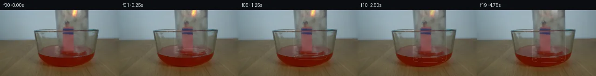

![首帧]()

Round 00
2026-11-05T08:32:37.848008+00:00像素候选变化代码 +201/−0inspection 更新
pixels d8754e87f9f23dcd · code ec13cd8327471c4f
查看本轮 generate.py 真实 diff
--- previous/generate.py +++ current/generate.py @@ -0,0 +1,201 @@ +from pathlib import Path + +import cv2 +import numpy as np +from PIL import Image, ImageDraw, ImageFont + +import artifact_io + + +ROOT = Path(__file__).resolve().parent +W, H = 256, 144 + + +def alpha_over(dst, color, alpha): + """Composite a solid RGB color through a float alpha map.""" + a = np.clip(alpha, 0.0, 1.0)[..., None] + return np.clip(dst.astype(np.float32) * (1.0 - a) + np.asarray(color) * a, 0, 255).astype(np.uint8) + + +def soft_ellipse(shape, center, axes, sigma=1.2): + yy, xx = np.indices(shape, dtype=np.float32) + cx, cy = center + ax, ay = axes + d = ((xx - cx) / ax) ** 2 + ((yy - cy) / ay) ** 2 + mask = (d <= 1.0).astype(np.float32) + return cv2.GaussianBlur(mask, (0, 0), sigma) + + +def line_layer(points, color, thickness=1, blur=0.0): + layer = np.zeros((H, W), np.float32) + cv2.polylines(layer, [np.asarray(points, np.int32)], False, 1.0, + thickness=thickness, lineType=cv2.LINE_AA) + if blur: + layer = cv2.GaussianBlur(layer, (0, 0), blur) + return color, np.clip(layer, 0, 1) + + +def draw_glass(frame, t): + # The jar has parallel sides in this locked view. Its open rim moves from + # y=88 to y=108 and then remains seated in the liquid. + q = min(t / 8.0, 1.0) + ease = q * q * (3.0 - 2.0 * q) + rim_y = 88.0 + 20.0 * ease + left, right = 119, 190 + + # Very weak refraction in the jar body: a one-pixel downward displacement + # that fades at the center, not an opaque painted shape. + body = np.zeros((H, W), np.float32) + body[: int(rim_y) + 2, left + 2:right - 2] = 1.0 + body = cv2.GaussianBlur(body, (0, 0), 1.4) + refracted = np.roll(frame, 1, axis=0) + refract_alpha = body * (0.025 + 0.012 * ease) + out = np.clip(frame.astype(np.float32) * (1 - refract_alpha[..., None]) + + refracted.astype(np.float32) * refract_alpha[..., None], 0, 255).astype(np.uint8) + + # Slight cool attenuation through the glass, strongest at its shoulders. + yy, xx = np.indices((H, W)) + center_falloff = np.clip(np.abs(xx - 154.5) / 36.0, 0, 1) + cool_a = body * (0.010 + 0.012 * center_falloff) + out = alpha_over(out, (164, 184, 190), cool_a) + + # Paired edge highlights/shadows retain the subdued photographic contrast. + edge = np.zeros((H, W), np.float32) + edge[: int(rim_y) + 1, left] = 1 + edge[: int(rim_y) + 1, right] = 1 + edge = cv2.GaussianBlur(edge, (0, 0), 0.65) + out = alpha_over(out, (211, 224, 224), edge * 0.16) + shadow = np.zeros((H, W), np.float32) + shadow[: int(rim_y) + 1, left + 2] = 1 + shadow[: int(rim_y) + 1, right - 2] = 1 + shadow = cv2.GaussianBlur(shadow, (0, 0), 0.8) + out = alpha_over(out, (50, 55, 52), shadow * 0.10) + + # Open circular mouth appears as a shallow perspective ellipse. The rear + # and front halves differ in brightness because the front crosses liquid. + rim = np.zeros((H, W), np.float32) + cv2.ellipse(rim, (154, int(round(rim_y))), (35, 5), 0, 180, 360, + 1.0, 1, cv2.LINE_AA) + cv2.ellipse(rim, (154, int(round(rim_y + 1))), (35, 5), 0, 0, 180, + 0.85, 1, cv2.LINE_AA) + rim = cv2.GaussianBlur(rim, (0, 0), 0.45) + out = alpha_over(out, (206, 215, 207), rim * 0.20) + dark_rim = np.zeros((H, W), np.float32) + cv2.ellipse(dark_rim, (154, int(round(rim_y + 2))), (34, 4), 0, 5, 175, + 1.0, 1, cv2.LINE_AA) + dark_rim = cv2.GaussianBlur(dark_rim, (0, 0), 0.55) + out = alpha_over(out, (66, 40, 32), dark_rim * (0.10 + 0.08 * ease)) … diff truncated; 114 more lines …